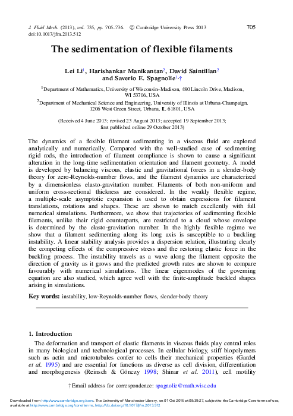

Rules for filenames:
- Single author: Bloggs2014.pdf
- Two authors: BloggsSoggs2014.pdf
- Three or more authors: BloggsEtAl2014.pdf
- Multiple papers which would end up with same
filename: BloggsEtAl2014b.pdf etc.
- Use same stem for all associated material (such as scanned notes
etc.). Script already provides commented out hyperlink to
stem_notes.pdf (e.g. BloggsEtAl2014b_notes.pdf). Feel free to add
others, e.g. BloggsEtAl2014b_fig6a.csv, BloggsEtAl2014b_fig6a.png etc.
How to create new entry:
- Run
./add_pdf.bash BloggsSoggs2014.pdf
This creates on-screen output that can be pasted into index.html.
Make sure you include start/end lines which may be useful for sorting entries
at some point. Then populate bullet point list with comments.
|
|
TornbergShelley2004
|
Notes:
- Nonlocal slender body theory for motion of multiple elastic
fibres in viscous fluid. Shows shear induced buckling that can store
and release elastic energy. Related to positive first normal stress
differences observed in (upscaled models of) non-Newtonian fluids.
- bla
|
|
|
GuglielminiEtAl2012
|
Notes:
- Buckling of filaments in shear flow (there are other papers, but
this is one we could quote).
|
|
|
ManikantanEtAl2014
|
Notes:
- Exploits results from Li et al. (2013) (see below) for weakly
flexible isolated fibres to come up with model of suspension of
such fibres, exploiting that "the only stable orientation
for the filament is one perpendicular to the direction of
gravity, and every other configuration reorients at a rate that
depends on flexural rigidity and instantaneous orientation."
|
|

|
LiEtAl2013
|
Notes:
- Slender body theory for thin elastic (Euler Bernoulli) fibres
sedimenting in viscous fluid. Very nice.
- "Although seemingly simple, the sedimentation of elastic
filaments in a constant and uniform gravitational field has received
limited attention and has yet to be fully analysed even in the case of
isolated filaments." Ha!
- "At zero Reynolds number a rigid fibre with unit director t
sedimenting under gravity in an unbounded fluid will
maintain its orientation and travel at a constant velocity U = ..."
- Modestly floppy filaments (as characterised by elasto-capillary
number) released from a near vertical initial
orientation bend into U shape and then descend with the bottom of the U
pointing downwards.
- Very floppy fibres undergo buckling instabilities while they're
still nearly vertical. Final state not totally clear to me. Is it a
very tight U? The authors bail out (possibly because they encounter
numerical problems?), rightly pointing out that the model becomes
questionably if the beam is very strongy bent, not just because
of the (linearised) solid mechanics but also because the slender
body model ignores the self-interaction between folded over (and hence
very close) parts of the beam. There are supposed to be movies on the
JFM webpage but they're not visible at the moment.
|
|
|
MitchellSpagnolie2015
|
Notes:
- Nice paper on the effect of walls (parallel to the direction
of gravity!) on the settling of rigid spheroidal bodies.
- Good reference to acknowledge wall effects.
|
|
|
Lugt1983
|
Notes:
- Annual review of "autorotation" = "tumbling" in the falling disk
literature. Added for completeness.
|
|
|
MahadevanEtAl1999
|
Notes:
- Nicely written brief note summarising experiments and identifying
scaling law for tumbling frequency vs. "normlalised width".
- "A flat, thin rectangular card released in still air with its
long axis horizontal will either flutter to the ground, periodically
oscillating from side to side, or tumble while drifting
steadily to one side."
- "We were limited
in our choice of strips by two factors: If the strips were too
thin, they began to bend so that new effects were introduced
into the problem , ..."
|
|
|
AugusteEtAl2013
|
Notes:
- Very nice study of falling disks. Planar paths (straight
vertical, zig-zag (fluttering), chaotic and autorotation (tumbling)
plus two new genuinely 3D paths which were previously unknown (and
take a long time to develop).
- Aspect ratio of disk has important effect on dynamics/paths.
- Non-straight paths must arise from wake instability but
threshold for their onset can be very different from wake instability
of flow past fixed body, implying that (rigid) FSI has an important
effect on the instability.
- References to earlier papers which show that for given inertia
ratio two types of unstable modes exist: "Aerodynamic" ones
which result in significant body motions; and "Fluid" ones which
don't. For the latter, shedding frequencies are similar to those
observed in the flow past the fixed body while frequencies arising
in "Aerodynamic" modes (e.g. tumbling or fluttering) are completely
different, again indicating that they arise through a genuine
interaction between fluid and solid.
|
|
|
ErnEtAl2012
|
Notes:
- Annual Review. Lovely for background and details for rigid (!)
bodies
falling in viscous fluid and how/why their path deviates from
straight line.
- Generally two main mechanisms: (i) anisotropy of added mass
tensor -- forces on falling body are directly related to
instantaneous (and possibly history of its) orientation.
(ii) symmetry breaking instability of wake affect particle trajectory
which affects wake etc. -- these forces arise primarily from the
fluids instability and are therefore not directly related to
orientation of falling particle (cf. Karman vortex street in flow
past cylinder for which added mass tensor is isotropic.
- Paths of disks display "fluttering", "chaotic" and "tumbling" trajectories.
- Wake instability of 3D flow past spheres differs from 2D flow
past cylinder. The latter has a symmetry breaking Hopf bifurcation
at Re approx 46; the wake behind a sphere breaks symmetry at Re
approx 212 in a steady bifurcation.
- All very lovely, but apart from context not directly relevant
to elastic sheet story...
|
|
|
GoldsteinEtAl1996
|
Notes:
- One of the few "applications" mentioned in Powers' (2010) review.
Nice paper; looks at instability of liquid bilayer, using Helfrich
type approach to energies; not relavant to what we're trying to do though.
|
|
|
Guven2004
|
Notes:
- Highly rated by Powers (2010) but to me this looks like
bog-standard Hu-Washizu type messing around with variational
principles. Purely theoretical, not used for any actual
computations, so well-posedness and stability of associated
discretisation etc. unclear.
- Maybe an idea for David R. to look into, though.
|

|
Powers2010
|
Notes:
- Fairly highly cited review paper; provides overview of modelling
approachees. Nicely written but the machinery isn't actually used
for much (especially the material relating to membranes which is
based on a Helfrich-type approach).
- Over 50 citations (WoS) but they're mainly concerned with pure
solids instabilities, fibres in flow or active membranes (swimming) so
nothing directly relevant to us.
|
|
|
StockieGreen1998
|
Notes:
- Immersed boundary method for neutrally buoyant fibres in 2D shear flow.
- Nicely written; flexibility of fibres is important in paper
marking (refs to Forgacs and Mason papers which apparently list full
zoology of "orbit classes" experienced by fibres in shear flows)
- Single fibres only. Different types of tumbling motion identified
in different parameter regimes ("rigid rotation", "springy rotation",
"snake turn", "complex rotation").
|
|
|
AlbenEtAl2002
|
Notes:
- Elastic fibre (held at centre) in soap film. Large Re (2000-40,000)
- Experiments and free-streamline-theory (FST) coupled to
nonlinear beam equation. Shape becomes self-similar. Drag is reduced
by reconfiguration.
|
|
|
Vogel1984
|
Notes:
- Written for zoologists, but nice paper to refer to. Plenty of
(not totally surprising, as the author himself acknowledges) evidence
that biological organisms reconfigure to minimise drag.
- Makes the point that flow-induced reconfiguration doesn't
automatically reduce drag -- only tends to "work" in certain regimes
and the organism presumably optimises itself for the most
relevant/likely to be encountered flow conditions.
|
|
|
YamamotoEtAl1992
|
Notes:
- 2D low (but finite) Re flow (streamfct vorticity) past membrane
held fixed at ends and inflated/deflected by oncoming flow.
- Obviously no wrinkling but it's an (infinitely wide) sheet
rather than a fibre.
- Constitutive equation for sheet is unclear. On page 291
(first line in section 2.3) it's classified as inextensible; yet
parameter study is performed for imposed tension. All a bit odd.
- For infinite membrane tension, the membrane is flat (obviously!);
as tension is reduced it bulges backward more and more but in the
steady parameter studies there's no solution when the tension
drops below a certain threshold, creating a limit point. Beyond the
limit point deformation (and drag!) increase very rapidly.
|
|
|
ShojaelDehghani2015
|
Notes:
- Pretty poor paper; lineraised elastic beam plus nonlocal slender body
model for flow.
- One neat feature (if true) is that very flexible filaments
have "two arms", one "flapping" the other one "stable". The former
"propels" the filament sideways.
|
|
|
CrispellEtAl2013
|
Notes:
- Elastic sheet swims actively in viscoelastic fluid but motion
isn't completely imposed -- only the "preferred kinematics" is specified;
the actual motion is affected by FSI. Re of O(1).
- Immersed boundary method.
|
|
|
RyooEtAl2011
|
Notes:
- Conference paper explaining how to make ultrathin pdms membranes.
|
|
|
PocivavsekEtAl2008
|
Notes:
- Lovely experiment + scaling + some numerics paper (Science, so
brief) explaining the wrinkle to fold transition when membranes
are compressed while they're floating on sheets (or other substrates).
- Linear analysis predicts how wrinkle wavenumber and amplitude
depend on compression (confinement) of membrane.
- Fold begins to emerge when compression exceeds 30% of the wrinkle
wavelength.
- (Note: also added to Draga's FvK collection)
|

|
MiaraLabReport2016
|
Notes:
- Tymoteusz Miara's lab report preliminary experiments with
sedimenting sheets.
|